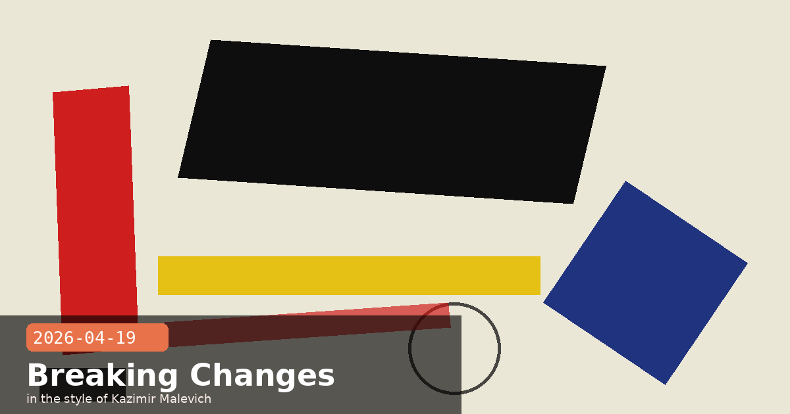

Opus 4.7 Breaking Changes, Bedrock GA & Vision Guide

💡 Opus 4.7 Has Three API Breaking Changes — Each One Returns a Hard 400 Error
Yesterday's Opus 4.7 launch diary covered task budgets, xhigh effort, and the new tokenizer at a high level. What it didn't cover in depth are the three API changes that will cause your existing production code to silently break the moment you swap the model ID — each one returns a 400 error rather than degrading gracefully. Here is the complete picture.
1. Sampling parameters are removed
Setting temperature, top_p, or top_k to any non-default value now returns a 400 validation error on Opus 4.7. The migration path is straightforward: omit these parameters entirely and use prompting to guide output style instead. One nuance worth noting: if you were setting temperature = 0 for determinism, Anthropic explicitly states this never guaranteed identical outputs anyway — but removing it is still the right move.
# Before (Opus 4.6 — will now fail on 4.7)
response = client.messages.create(
model="claude-opus-4-7",
max_tokens=4096,
temperature=0.7, # ← 400 error
top_p=0.9, # ← 400 error
messages=[...]
)
# After (Opus 4.7 — correct)
response = client.messages.create(
model="claude-opus-4-7",
max_tokens=4096,
messages=[...]
)
2. Extended thinking budgets are removed
The thinking: {"type": "enabled", "budget_tokens": N} pattern is gone. Opus 4.7 supports only adaptive thinking — setting budget_tokens will return a 400 error. Note that adaptive thinking is off by default; you must opt in explicitly, and you control depth via the effort parameter rather than a token budget.
# Before (Opus 4.6 — will now fail on 4.7)
thinking = {"type": "enabled", "budget_tokens": 32000}
# After (Opus 4.7 — correct)
thinking = {"type": "adaptive"}
output_config = {"effort": "high"} # effort controls depth
3. Thinking content is omitted from responses by default
This one is silent — it does not raise an error. When adaptive thinking is enabled, the thinking field of thinking blocks will be empty by default unless the caller opts in with "display": "summarized". The signature field is still present (required for multi-turn continuity), but the reasoning text itself is gone unless you ask for it. The practical consequence: if your product streams reasoning progress to users, upgrading to 4.7 will appear to hang with a long pause before output begins.
# To restore visible reasoning (e.g. for streaming UIs)
thinking = {
"type": "adaptive",
"display": "summarized", # show reasoning summary in the stream
}
# Default (no display field) = omitted — reasoning runs but text is empty
Check your integration before pointing at claude-opus-4-7
Run a quick audit before upgrading: search your codebase for temperature, top_p, top_k, and budget_tokens and remove them. Then check whether any UI component expects to receive non-empty thinking text in the stream — if so, add "display": "summarized". Both are one-line fixes, but finding them first will save you an on-call incident.
Claude API skill can automate the migration
The official migration guide mentions that the Claude API Agent Skill can apply these migration steps to your codebase automatically when invoked via Claude Code. If you have a large number of files to update, that path is faster than grep-and-replace.
Opus 4.7breaking changestemperature removedadaptive thinkingmigration400 errorAPI upgrade
💡 Claude on Amazon Bedrock Is Now Generally Available — Self-Serve in 27 Regions, No Account Exec Required
When the Claude Messages API on Amazon Bedrock was announced on April 7 as a research preview, it required contacting an Anthropic account executive to get access, and was limited to us-east-1. As of April 16, that has changed: Claude on Bedrock is now generally available for all Amazon Bedrock customers, self-serve from the Bedrock console, across 27 AWS regions with both global and regional endpoints. Claude Opus 4.7 and Claude Haiku 4.5 are the two models available at launch.
What changed versus the research preview
No more gated access — any Bedrock customer with the right IAM permissions can enable Claude from the Bedrock Model Access console today, no waitlist or account exec conversation needed.
27 AWS regions — expanded from the single us-east-1 research preview to a full multi-region rollout, including both regional endpoints (latency-optimised) and global endpoints (automatic failover).
Two models at launch — Claude Opus 4.7 (the newest, most capable GA model) and Claude Haiku 4.5 (the fastest/cheapest). Sonnet 4.6 availability on Bedrock is not confirmed in this release.
Identical API surface — the /anthropic/v1/messages endpoint continues to accept the same request shape as the first-party Claude API, so code written for api.anthropic.com migrates with a single base URL swap and an AWS Signature V4 auth header.
Why this matters for enterprise teams
The research preview's gated access meant it was a planning tool, not a deployment path. GA removes that friction. Teams that need AWS-managed infrastructure for data residency, VPC PrivateLink, or HIPAA/FedRAMP compliance can now ship against the Bedrock endpoint without a procurement cycle. The endpoint carries the same zero-operator-access guarantee as the preview: Anthropic cannot see your prompts or responses on the Bedrock deployment path.
import anthropic
import boto3
from botocore.auth import SigV4Auth
# Point the Anthropic SDK at the Bedrock GA endpoint
# (replace region with any of the 27 supported regions)
client = anthropic.Anthropic(
base_url="https://bedrock.us-east-1.amazonaws.com/anthropic/v1",
auth=SigV4Auth(
boto3.Session().get_credentials(),
"bedrock",
"us-east-1"
),
)
# Identical call shape — no code changes beyond base_url + auth
response = client.messages.create(
model="claude-opus-4-7",
max_tokens=4096,
messages=[{"role": "user", "content": "Hello from Bedrock GA!"}],
)
print(response.content[0].text)
Model parity caveat: not all beta features are available yet
Several newer capabilities — the Advisor Tool, Claude Managed Agents, and the Compaction API — are not available on the Bedrock endpoint as of the GA launch. If your use case depends on any of these, you will need to stay on the first-party api.anthropic.com endpoint for now. Check the Claude in Amazon Bedrock docs for the current feature-support matrix as it evolves.
💡 Opus 4.7 Vision: 2576px / 3.75MP Images and 1:1 Pixel Coordinates — A Practical Guide
One of Opus 4.7's headline additions is high-resolution image support — and the implementation detail that makes it practically useful for computer use and screenshot workflows is the coordinate system change. Here is what actually changed and how to take advantage of it without burning tokens unnecessarily.
What changed: resolution ceiling and coordinate mapping
Previous Claude models accepted images up to 1568px / 1.15MP before silently downscaling. Opus 4.7 raises this to 2576px / 3.75MP — a 3.25× increase in pixel count. More practically: a 1440p screenshot (2560×1440 = 3.69MP) can now be sent without downscaling, meaning Claude can read text in small UI elements, dense charts, and high-DPI renders that previously blurred into indistinction.
The coordinate system has also changed. Previous models reported coordinates in a scaled space that required callers to apply a scale factor when mapping model outputs back to screen pixels. Opus 4.7 reports coordinates in 1:1 pixel space — no scale-factor math needed.
# Before (Opus 4.6): coordinates were in scaled space
# You had to do: screen_x = model_x * scale_factor
# After (Opus 4.7): coordinates are 1:1 with actual pixels
# No math needed — click exactly where the model says
# Example: computer use tool click
{"type": "computer_use", "action": "left_click", "coordinate": [1234, 567]}
# 1234, 567 ARE the real screen pixels on Opus 4.7
Token cost: only send high-res when you need it
High-resolution images use proportionally more tokens. A 2560×1440 screenshot costs roughly 3× as many tokens as the same image downscaled to 1280×720. For most tasks — form filling, button clicking, navigation — the lower resolution is sufficient. Only send full-resolution images when the task genuinely requires pixel-level fidelity: reading dense data tables, verifying typeset output, or identifying exact positions within a complex UI.
from PIL import Image
def prepare_for_claude(image_path: str, task: str) -> bytes:
"""
Downsample to 1280×720 for routine tasks.
Send at native resolution only when pixel fidelity matters.
"""
img = Image.open(image_path)
high_res_tasks = {"table_extraction", "pdf_reading", "pixel_verify"}
if task not in high_res_tasks:
img.thumbnail((1280, 720), Image.LANCZOS)
# Opus 4.7 accepts up to 2576px — clamp if above the ceiling
max_dim = max(img.size)
if max_dim > 2576:
scale = 2576 / max_dim
img = img.resize(
(int(img.width * scale), int(img.height * scale)),
Image.LANCZOS
)
import io, base64
buf = io.BytesIO()
img.save(buf, format="PNG")
return base64.b64encode(buf.getvalue()).decode()
Improvements beyond resolution
Anthropic notes two additional vision improvements in Opus 4.7 beyond the resolution ceiling change:
Low-level perception — improved accuracy on pointing, measuring, and counting tasks. Useful for agents that need to identify exact UI element positions or count items in images.
Bounding-box localization — natural-image bounding-box detection is improved, making the model more reliable for object detection and localization tasks without needing a separate vision model.
Remove perception-scaffolding prompts and re-baseline
If you have prompts with workarounds like "double-check the slide layout before returning" or "count each item carefully" that were added to compensate for older models' weaker vision, remove them now and re-run your evals. Opus 4.7's improved low-level perception may make those prompts unnecessary — and leaving unnecessary scaffolding in place can actually degrade performance on the new model by over-directing its attention.